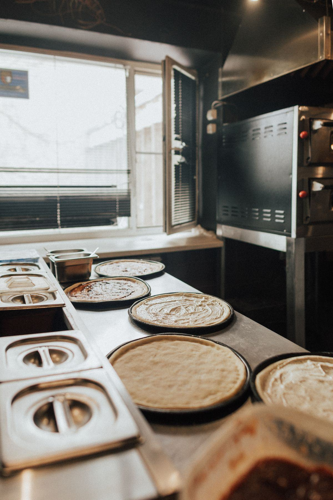

HACCP, plan de maîtrise sanitaire, températures, traçabilité, marche en avant : l'essentiel des obligations d'une pizzeria, expliqué sans jargon et avec les conséquences concrètes sur votre matériel.

Une pizzeria est un établissement de restauration commerciale comme un autre : elle relève du paquet hygiène européen, doit déclarer son activité auprès de la direction départementale en charge de la protection des populations, et doit pouvoir démontrer à tout moment qu'elle maîtrise ses risques sanitaires. La spécificité du métier tient à trois choses : un produit à base de pâte crue manipulée à mains nues, des garnitures fraîches très variées, et un laboratoire souvent minuscule où tout se croise. C'est autour de ces trois points que se concentrent les contrôles.
La méthode HACCP consiste à identifier les dangers de votre process — biologiques, chimiques, physiques —, à repérer les points où le risque doit être maîtrisé, à fixer des limites, à surveiller, à corriger et à consigner. En pizzeria, les points sensibles sont presque toujours les mêmes : la réception des matières premières, la chaîne du froid des garnitures, la maturation de la pâte, la manipulation par le personnel et le nettoyage des surfaces.
Cette analyse s'incarne dans le plan de maîtrise sanitaire, le classeur que l'inspecteur demandera en premier. Il rassemble les bonnes pratiques d'hygiène, l'étude HACCP, la traçabilité et les procédures de gestion des non-conformités. Un PMS vivant, tenu à jour chaque semaine, vaut infiniment mieux qu'un modèle acheté sur internet et jamais rempli.
Au moins une personne formée à l'hygiène alimentaire doit figurer dans l'effectif de l'établissement. La formation dure généralement 14 heures. Certains diplômes de cuisine et une expérience suffisante en restauration ouvrent droit à une équivalence.
Plan de nettoyage et désinfection, relevés de températures, plan de lutte contre les nuisibles, potabilité de l'eau, gestion des déchets, formation du personnel, procédure de retrait-rappel.
Températures des enceintes froides relevées chaque jour, températures de réception des livraisons, actions correctives datées et signées. Un relevé manquant vaut souvent non-conformité.
Repères usuels. La température figurant sur l'étiquette du fabricant prime toujours sur toute valeur générale, et doit être respectée telle quelle.
| Produit | Température | Point de vigilance |
|---|---|---|
| Mozzarella, fromages frais, charcuterie | 0 – 4 °C | Bacs GN de la table à pizza, pas de rupture au coup de feu |
| Légumes préparés, sauces maison | 0 – 4 °C | Étiquetage avec date de fabrication et durée de vie fixée |
| Produits stables selon l'étiquette | ≤ 8 °C | Suivre strictement l'indication du fournisseur |
| Pâtons en maturation | 2 – 4 °C | Armoire dédiée, bacs couverts, rotation FIFO |
| Produits surgelés | -18 °C | Jamais de recongélation après décongélation |
| Pizza maintenue au chaud | ≥ 63 °C | Durée de maintien limitée, à définir dans le PMS |
C'est ici que le matériel devient un sujet réglementaire autant que pratique. Une table à pizza réfrigérée qui ne tient plus ses 4 °C sous 30 °C de cuisine en plein mois d'août est un point de non-conformité immédiat. Même logique pour l'armoire de fermentation des pâtons : une pâte maturée à température flottante n'est pas seulement irrégulière, elle est aussi un risque sanitaire.
Le principe : les produits progressent de la zone sale vers la zone propre sans jamais revenir en arrière, et les flux ne se croisent pas — matières premières, préparations, déchets, vaisselle sale, personnel. Sur le papier, c'est simple. Dans un laboratoire de 12 m² où le pétrin, le plan de façonnage, la plonge et la poubelle se partagent trois mètres linéaires, c'est un exercice de conception.
La solution idéale : réception, stockage, préparation, cuisson, envoi et plonge occupent des zones distinctes, avec des circulations qui ne se recoupent pas. Elle suppose de la surface, donc elle se décide au moment du plan de cuisine, pas après.
La solution des petits locaux, parfaitement admise : on sépare les opérations par des plages horaires, avec nettoyage et désinfection complets entre chaque phase. Le pétrissage le matin, la découpe des légumes ensuite, le service après. À condition que ce soit écrit dans le PMS et réellement appliqué.
Un pétrin se démonte et se nettoie : cuve, spirale, colonne, joints. Vérifiez l'accessibilité au nettoyage avant d'acheter — un modèle impossible à démonter deviendra un point noir permanent lors des contrôles.
Bacs GN couverts, ustensiles dédiés par bac, plan de travail en granit ou inox lisse, lave-mains à commande non manuelle à proximité immédiate, avec savon et essuie-mains à usage unique.
Toute surface en contact avec les denrées doit être lisse, non poreuse, non toxique, résistante aux chocs et facile à nettoyer et désinfecter. En pratique : inox alimentaire pour les plans et les structures, granit ou marbre pour le façonnage, polyéthylène pour les planches, et surtout pas de bois brut ni de stratifié écaillé. Sols et murs doivent être lavables jusqu'à hauteur utile, avec des angles arrondis quand c'est possible. Les équipements doivent porter les mentions de conformité au contact alimentaire.
La traçabilité, elle, repose sur une règle simple : à tout moment, vous devez pouvoir dire d'où vient chaque produit servi. Concrètement, cela signifie conserver les étiquettes et bons de livraison, étiqueter les préparations maison avec la date de fabrication et la durée de vie que vous avez fixée, appliquer une rotation FIFO stricte, et garder des échantillons témoins si votre activité l'impose. Ce point est examiné systématiquement lors des contrôles.
Elle est inopinée. L'inspecteur regarde l'état général, les températures, le PMS, la traçabilité, le lave-mains et la tenue du personnel. Les suites vont du simple avertissement à la fermeture administrative en cas de danger grave, et les résultats peuvent être publiés.
Hotte et conduits dégraissés selon un rythme défini, ramonage du conduit d'un four à bois, extincteurs adaptés et vérifiés, arrêt d'urgence accessible. Voir notre page installation et extraction.
Tenue propre et dédiée, coiffe, bijoux retirés, lavage des mains à chaque changement d'opération. La pâte se manipule à mains nues : c'est justement pour cela que le lavage des mains est le point le plus surveillé en pizzeria.
Ces exigences ont une conséquence directe sur vos achats : un four facile à nettoyer, une sole réfractaire en bon état, une hotte démontable et un matériel froid correctement dimensionné coûtent un peu plus cher à l'achat, mais évitent les remises en conformité en urgence. Si vous montez votre projet, notre guide quel four choisir et notre guide des prix vous aideront à budgéter l'ensemble.
Décrivez votre projet : un fournisseur spécialisé CHR vous répond sous 24 h ouvrées, gratuitement.